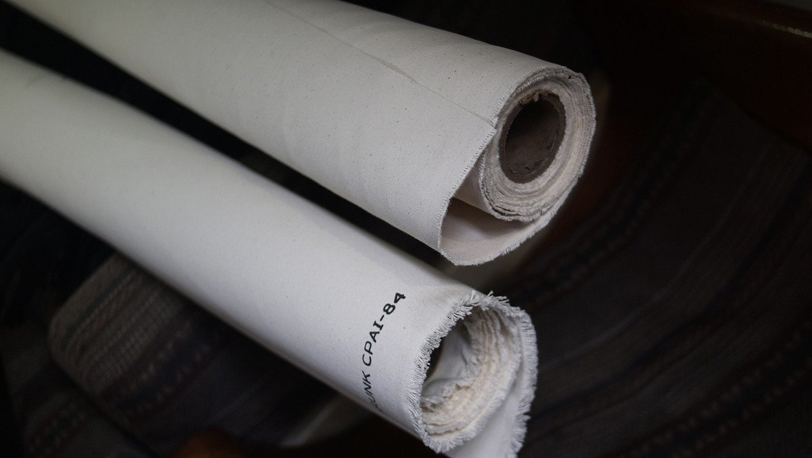
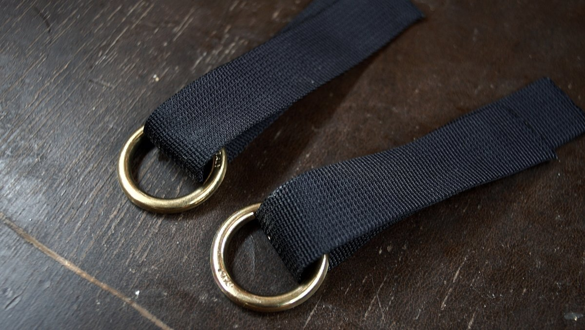
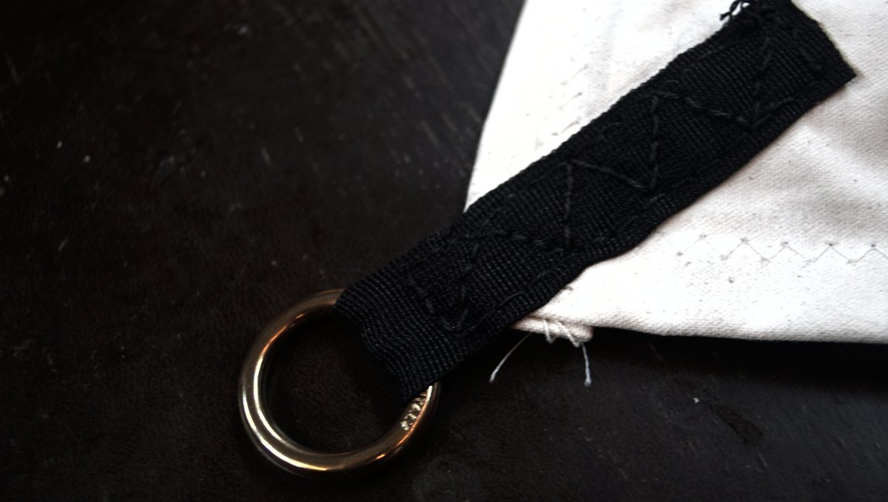

boom tent
21.10.24
Victoria, Canada
To shield us from the rain in the winter, and from the sun in the summer, we decided to build a tent for our boom. If we so chose, we could also hang it from the end of the boom to the backstay to shield the cockpit. In the interest of building things that last, we didn't want to use those cheap plastic tarps sold in hardware stores.
Fabric stores, like most businesses nowadays, suffer from lack of inventory due to a disruption in the supply chain. Jeunes Brothers in victoria had many empty rolls. We walked in looking for canvas and found Sunforger's boat shrunk, a 100% 10 oz cotton marine canvas that is treated to repel both mildew and water.
Sunbrella was 4 times the price of this material. Although, the canvas was only available in off-white and a light green color. We picked two rolls of off white. Because they didn't have enough material in store for our project, they sold us the second roll at a good price. The boom tent is shorter than we wanted, but it is better than no boom tent at all. When stores are out of a product and that the clerk says they'll get some again soon, that usually means they don't know when they will, and the sad truth is they may not get any at all. It is best not to rely on up-in-the-air promises and to work with what there is.
We measured and cut two even lenghts of canvas, with plans to sow them together. The seam would lie over the top of the boom.
We overlapped the two pieces of canvas on the floor, aligning them perfectly, and used a stapler to secure them together. The staples were fixed a short distance away from the place where we'd planned to run our stitches. We stitched the two together with our friend's sewing machine. We used uv-resistant sail thread left over from when we repaired our headsail cover.
With the two halves bound together, we removed the staples and ironed the seam flat, laying it over one side. Then, we flipped the whole thing over, made a fold near the seam (about 1 1/2 inch wide), and ironed it flat. Our friends recommend the use of a clothes iron to flatten or re-orient seams, we found this technique incredibly useful! We stitched the seam down the whole lenght of the fold, following one edge, and then the other.
To keep the outer edges from unraveling we made a seam about 2 in wide all around. Using the same technique with the iron, we folded it over, and ran the iron overtop to keep the fold down before stitching it. The seam in the middle of the tent with the outer seam had now become very thick, their machine couldn't handle it so we skipped it with plans to finish it by hand with a sewing awl.
We bought 4 bronze rings and some nylon webbing and stitched it onto the four corners. We'll run bungees or ropes through the rings to tie it down.
 We're wondering if it wouldn't be better to added 3 strands of webbing instead of one to spread out the weight...
More soon...